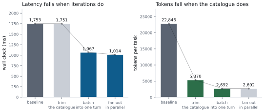

Optimizing for Latency, Tokens, and Cost
This is the chapter the rest of the book has been setting up. Everything from here is a technique, a measurement, and an honest note about when it does not help.
One ground rule before we start, and it is the whole discipline: every change gets attributed. Not “we did six things and it got faster”. Six numbers, one per change, including the ones that turned out to be worth nothing. Chapter 16 gave you the instrument; this chapter uses it.
The Meridian optimisation pass
Same task throughout: score an account for credit risk, screen it for fraud, and fetch the reference curve. Four servers, 12 ms simulated per-call latency.

Read that table row by row, because each row teaches something different.
Trimming the catalogue saved 76 % of tokens and zero milliseconds. The catalogue is not on the critical path for latency; it is on the critical path for cost. Two budgets, two levers, and confusing them is how people spend a sprint on the wrong one.
Batching saved both, and by the most. Four iterations became two, which halved the model turns, which is where 96 % of the wall clock lives. This is the round-trip lesson from Chapter 1, cashed out.
Parallel fan-out saved 53 ms of a 1,067 ms task. Real, worth having, and five percent. At 12 ms per call there is not much to win; at 40 ms there is three times more.
Cut round trips
The category that returns the most, always.
Front-load MRTR inputs
An elicitation costs about 375 ms, of which 35 is transport and 340 is the model turn it forces (Chapter 8). So the cheapest elicitation is the one that never happens.
"exposureUsd": {
"type": "number", "minimum": 0,
"description": "Proposed exposure. Above 5,000,000 an "
"approver is required before scoring.",
},That description is an optimisation. The model reads it, sees the threshold, and can collect the approver from the user before calling, in a turn it was going to spend anyway. When it works, the round trip disappears entirely.
Better still, take the approver as an optional argument, so a model that already knows it can supply it and skip the interrupt.
Batch arguments
rank_portfolio_risk exists for exactly one reason:
Twenty times faster, from one extra tool. And the server-side description points the model at it:
"Rank a set of accounts by risk score in one call. Prefer this over "
"calling assess_account_risk repeatedly."Let the model batch, then fan out
Two separate things that people conflate.
Batching is the model emitting three tool calls in one turn instead of three turns. That saves model turns, which is the expensive part.
Fan-out is the host executing those three concurrently. That saves transport time, which is the cheap part.
The measurement above shows the split precisely: batching took 1,751 ms to 1,067 ms, and fan-out took 1,067 to 1,014. Batching is thirteen times more valuable, and it is the one that depends on your tool design.
Prefetch App templates
Predeclared ui:// templates can be fetched during idle time (Chapter 10). Meridian’s is 2.6 KB with a 24-hour public TTL, so after the first fetch it is free forever. Cold, it is a resource read in the critical path of the first render.
Cache at every layer
Honour ttlMs
The single cheapest win in the book, and the measurement is stark:
Twenty times fewer requests, and a hundred times less setup latency, from respecting a field the server already sends you. If you implement one thing from this chapter, implement this.
And the resource-read side, from Chapter 6: 577 of 600 reads avoided, 96.2 % hit rate, 6.82× faster.
Use cacheScope: public where it is true
A public result can be served by a shared gateway to every user. For Meridian’s market-data server, which returns identical data to everybody, that turns N clients’ worth of load into one fetch.
For anything personalised, it is a data breach. Chapter 6 has the reasoning; the rule is that public is a claim about the content, not about the endpoint’s authentication.
Stable ordering, for the provider’s prompt cache
Deterministic tools/list ordering is a specification SHOULD, and the reason is prompt caching. Providers cache on a stable prefix. Reorder your catalogue and every request misses.
def test_tools_list_order_is_stable(self):
"""Unstable ordering silently destroys the provider's prompt cache."""The word “silently” is the problem. Nothing errors. Your server looks healthy. You just pay full prompt-processing price on every turn forever.
The same discipline applies to your host’s merged catalogue (sorted(self.bindings)) and to your system prompt, which should not contain a timestamp.
Invalidate on notification
TTL and listChanged together let you run long TTLs safely. Without the notification you must choose between staleness and refetching; with it you can have a five-minute TTL and still see changes in milliseconds.
Stream everything
Perceived latency is the latency. The Meridian baseline is 1,366 ms and 96 % of it is model inference you cannot speed up, so the remaining lever is making the wait legible.
Token streaming. Time to first token is 340 ms of a 440 ms turn. Stream, and the user waits 340 ms instead of 440.
Progress notifications. Free UX from any server that emits them. Forward them.
Partial results. Chapter 13 argued for this; the measurement here is why. Iteration 0 finishes at 447 ms of a 1,366 ms task, so showing its result buys the user two thirds of the wait back.
X-Accel-Buffering: noon every SSE response, or a proxy will buffer your carefully streamed events into one lump at the end.
Transport tuning
The smallest category, included because it is cheap and because people ask.
Reuse connections
def test_sequential_calls_reuse_one_connection(self):
transport = StreamableHttpClient(self.server.url)
client = Client(transport, server_label="wire")
for _ in range(5):
client.call_tool("echo", {"text": "x"})
self.assertEqual(transport.new_connections, 1)
self.assertGreaterEqual(transport.reused_connections, 4)
transport.close()On loopback this saves almost nothing. Over TLS to another region it saves a TCP handshake plus a TLS handshake per call, which is two extra round trips, which at 68 ms each is 136 ms you were about to pay repeatedly.
One connection is not enough, and this one bit me
Reuse the connection, and then notice what you have built. HTTP/1.1 carries one request at a time per connection: the next request cannot start until the previous response has been read. That is head-of-line blocking, and it is why a browser opens six connections per origin.
Now put that under the parallel fan-out this chapter recommends. A host that issues three tool calls concurrently, all to the same server, through one warm keep-alive connection, gets three requests queued behind each other. The fan-out code runs, the threads start, and the wall clock is the sum. The optimisation is present, measurable in the code, and worth zero.
Meridian had exactly this shape, and the book’s 2.8× fan-out figure hid it in plain sight, because that measurement fans out across different servers, each with its own client and its own connection. Every number in this book is honest and the reader fanning out to one server would have got nothing.
The fix is a pool:
def _acquire(self):
"""Take an idle connection, or make one.
A pool rather than a single connection, because HTTP/1.1 has no
multiplexing: one connection carries one request at a time, so three
parallel tool calls sharing one connection run in sequence and the
fan-out buys nothing. The pool is what makes the host's parallel path
parallel when every call goes to the same server.
"""Bounded, because unbounded is its own failure: a host that opens a connection per concurrent call will exhaust file descriptors on the client and connection slots on the server, and does so first during the traffic spike you built the fan-out for. Six is the number browsers settled on and it is a reasonable default.
Warm pools for stdio
Spawn-per-call is indefensible for anything but a one-shot CLI. Keep a pool, size it to your concurrency, and recycle processes on a schedule.
Let the gateway route on headers
Mcp-Method and Mcp-Name exist so intermediaries need not parse bodies. Use them: send tools/list to a cache tier and tools/call to a compute tier, rate-limit per method, apply strict WAF policy to the two tools that matter and relaxed policy to the rest.
And validate them, always, because two sources of truth that can disagree is a request-smuggling primitive (Chapter 3).
Spend tokens deliberately
Right-size the catalogue
The biggest single token lever, measured twice now:
Four techniques, in order of how much they usually return:
Delete unused tools. Check your telemetry. Anything with no calls in 90 days is pure cost.
Merge near-duplicates. Three tools that differ by one flag should be one tool with a parameter.
Compress descriptions. Lead with the outcome, drop the transport trivia. Chapter 5 has the before and after.
Filter per task. Send the tools plausibly relevant to this request. Costs a retrieval step, and it is the only technique that scales past a few dozen tools.
Structured outputs eliminate parse-retry loops
Chapter 5 made the correctness argument. The performance argument is the retry: a misparse costs a full model turn, roughly 440 ms and 1,300 input tokens, and client-side validation against an outputSchema catches the malformed response at the boundary instead.
An enum is worth extra attention. Telling the model that band is one of four values stops it inventing a fifth and stops it writing defensive handling for cases that cannot occur.
Truncate tool results before they enter context
return text if len(text) <= limit else text[:limit] + "...[truncated]"Blunt, and better than unbounded. Chapter 13 has the more sophisticated options; the important thing is that a bound exists, because a single 40 KB tool result poisons every subsequent turn of the task.
Tune task polling
For the Tasks extension, cadence is a direct token and request cost. Honour pollIntervalMs, back off for long jobs, and add jitter so a thousand clients that started together do not stay together.
Route models
Not every turn needs your best model.
| Turn | Cognitive load | Model |
| Initial planning | High. Real reasoning | Large |
| Tool selection from 3 options | Low. Classification | Small |
| Reading a structured result | Low. Extraction | Small |
| Deciding whether to stop | Medium. Judgement | Large |
| Summarising for context | Low. Compression | Small |
| Final synthesis | High. Composition | Large |
Two warnings, both learned expensively.
Measure the frontier, do not reason about it. Run your eval suite at each mix. It is common to move most turns to a small model and lose nothing measurable. It is also common to lose 15 points of task success, and which one you are in is not predictable from first principles.
A cheap wrong answer is not cheap. A small model that picks the wrong tool costs a full recovery cycle: another model turn, another tool call, another model turn. That is more expensive than the large model would have been.
The order to do things in
| # | Change | Typical return | Effort |
| 1 | Honour ttlMs |
20× fewer setup requests | one afternoon |
| 2 | Trim the catalogue | 76 % of tokens | one conversation |
| 3 | Add batch variants of looped tools | 20× on portfolio tasks | one tool |
| 4 | Batch and fan out | 40 % of wall clock | host change |
| 5 | Deterministic ordering | prompt-cache hits | one sorted() |
| 6 | Stream tokens and progress | perceived latency | UI work |
| 7 | Connection reuse, warm pools | 2 RTT per call | config |
| 8 | Route models | 30 to 60 % of cost | eval work |
| 9 | Rewrite the server in a fast language | 3 ms | three weeks |
What did not help
The section every performance chapter should have and almost none do.
Trimming the catalogue did not reduce latency. Zero milliseconds, twice measured. Tokens and time are different budgets.
Caching did not speed up the loop itself. Meridian fetches its catalogue before the loop starts, so the loop never touches the cache. Caching helped the setup path enormously and the loop not at all. If you had measured only the loop, you would have concluded caching was useless.
Parallel fan-out returned 5 % at 12 ms per call. Real, worth keeping, and not the story. At 40 ms it is worth three times more, which is a reminder that the value of an optimisation depends on the environment you measured it in.
The _meta envelope’s 160 % byte overhead is irrelevant. It looks alarming and it is 197 bytes on a request whose unit of work is hundreds of milliseconds of inference. Do not optimise it. I have watched somebody try.
Meridian, before and after
No new hardware. No faster language. Four changes, each measured, each attributable, and the largest of them was deleting tools.
What to remember
Attribute every change. Six numbers, not one story.
Iterations first, catalogue second, transport third.
Batching saves model turns; fan-out saves transport. Batching is worth roughly thirteen times more.
Honouring
ttlMscut setup requests by 95 %. Do this first.Deterministic ordering protects the provider’s prompt cache, and losing it is silent.
Front-load MRTR inputs. The cheapest elicitation is the one that never happens.
Structured outputs remove parse-retry loops; enums remove invented values.
Route glue turns to small models, and verify with evals rather than intuition.
A cheap wrong answer costs a full recovery cycle.
Publish what did not work.
Next: running it, once it is fast.